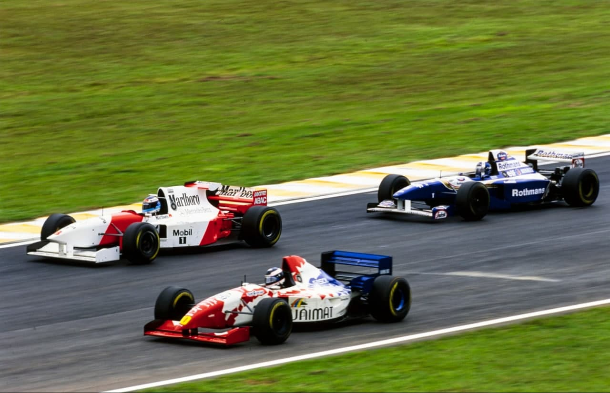
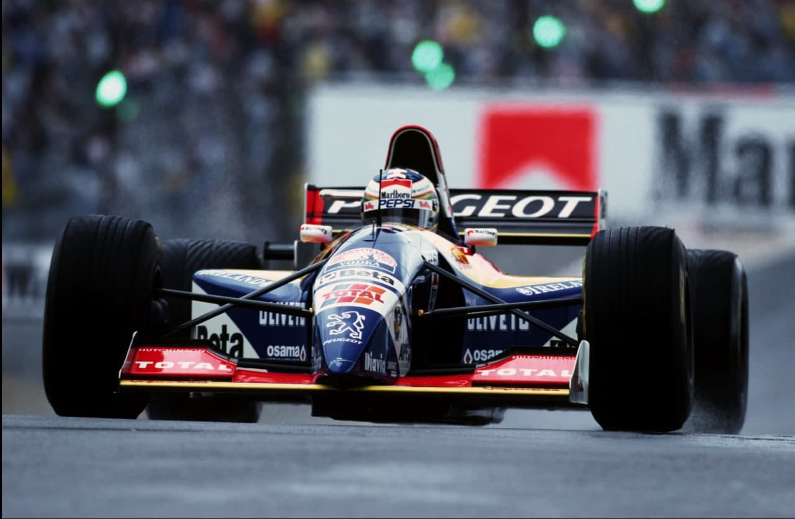
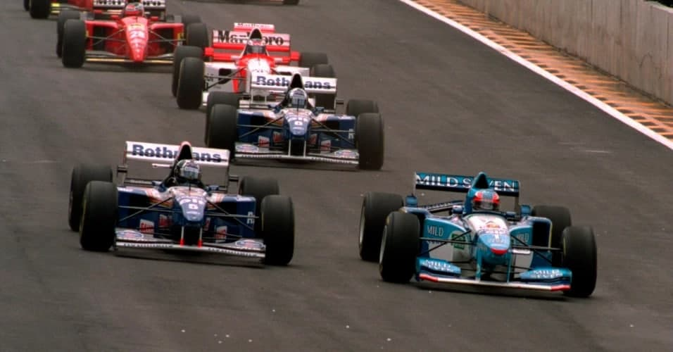
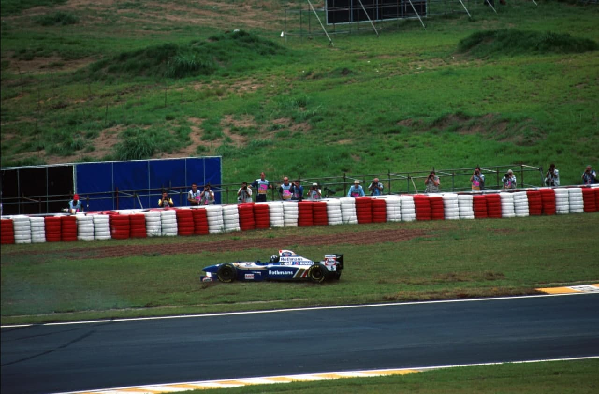

Schumacher e Coulthard desclassificados devido a gasolina não-conforme. Berger, 3º a uma volta herda vitória. McLaren chegam nos pontos. Barrichello desilude, Forti estreia, e Simtek termina GP pela primeira vez. Piso abominável. Semana marcada pela saudade de Senna. Primeiro GP Brasil sem campeão brasileiro.
Por Francisco Santos
As arquibancadas estiveram mais vazias. O povo mais triste pela saudade de Ayrton Senna. Por toda a parte sentia-se essa raiva, esse alheamento de auto-defesa. Todos se recordavam dos momentos de glória neste imponente Autódromo José Carlos Pace, outro saudoso nome dos paulistas. Foi uma semana de veneração ao sonho tornado saudade. Na pista vergonhosamente ondulada, por insólito destino, os Williams foram sempre mais competitivos que os Benetton, ao contrário de há um ano. Desta vez foi Schumacher quem teve de domar no braço o novo B195, qual potro selvagem saltitando nas ondulações de Interlagos fritando pneu em freadas nos limites para tirar no braço a desvantagem em relação aos mais equilibrados Williams. Tudo ao revés de 1994… Só que o alemão teve muito mais sorte que Ayrton um ano antes. Hill, como Ayrton, tinha conseguido a pole; rodou à 30ª volta por quebra da suspensão traseira. Schumy ficou na frente. Com garra, uma boa estratégia de corrida, com três reabastecimentos, conseguiu suplantar Coulthard. Com sorte, repito, porque escapou sair da pista no mesmo exato lugar, na saída da Junção, onde Ayrton abandonara um ano antes, no comando do GP.

No entanto, nada disto valeu. Depois da corrida, a FIA analisou — como prometera — a gasolina dos carros e o produto Elf dos carros dos dois primeiros classificados não era igual ao aprovado pela FIA. Resultado: desclassificação imediata, ainda em Interlagos, dando oportunidade a Berger e seus mecânicos de festejarem a herança de uma vitória conquistada no “tapetão”. Na pista ficara a uma volta de Schumacher. Mesmo assim foi um prêmio para a Ferrari, cujos novos 412-T2 além de ganharem o concurso de beleza do grid, ganharam um pouco de performance e muito em fiabilidade. Alesi chegou em quinto e herdou o terceiro lugar.
Nesta corrida a que não faltou emoção pelas trocas de comando, não foi difícil eleger duas estrelas que brilharam com tanta intensidade quanto a dos líderes. Depois de muita desilusão nos testes no Estoril e em Silverstone, a McLaren chegou a Interlagos rodeada de suspeições de um esperado e vergonhoso desaire com seu novo MP4-10/Mercedes. A situação da equipe era quase caricata: Mansell havia sido contratado a peso de ouro — falou-se em US$10 Milhões — e depois de ter tentado andar no carro, verificou-se que o cockpit era pequeno demais. Decidiu não correr, sendo substituído pelo piloto de testes Mark Blundell. Mika Hakkinen continuou sempre batalhando, bem ao estilo sacrificado dos finlandeses. Depois de uma corrida espetacular em que brigou roda a roda com Alesi, chegou em quarto e foi classificado em segundo. Meritoso. O outro Mika — Salo — foi o maior rival de seu compatriota na F3 inglesa de 1990. Depois de um episódio infeliz “extraditou-se” para o Japão e entra finalmente na F1 agora, com quatro anos de atraso. Fez uma corrida fenomenal, subindo de 21° no grid, para 3° à 31° volta, na frente de Hakkinen e 10s à frente de Berger e Alesi. O cockpit do Tyrrell 023 estava muito desconfortável, prendendo-lhe a circulação, e causando-lhe câimbras terríveis no braço esquerdo. Isto provocou uma rodada na saída do S do Senna. Mesmo assim ainda chegou em 7° (classificado em 5°) apenas no seu 3° GP! Vai dar que falar.

Desilusão brasileira
Barrichello não conseguiu fazer sequer 40 voltas em todo o fim de semana. Não bastasse o terrível peso de toda a torcida brasileira impulsionada pela imprensa o ter emocionalmente eleito herdeiro de Senna e lhe ter incumbido a tarefa de “fazedor de sonhos”, o azar perseguiu-o implacavelmente. Na corrida não conseguiu ir além da 17ª volta, ficando, como dois anos antes, sem câmbio (problema hidráulico). “Foi um fim de semana para esquecer”, reconheceu Rubinho. “Envelheci uns 10 anos. Nunca havia recebido tanto carinho da torcida e ao mesmo tempo tanta pressão. Aprendi que preciso ser o que sou. Não dá para fazer o que o Ayrton fazia, muito menos com esse carro. E hora de baixar a bola.” A única alegria brasileira foi a estreia da Forti, com o veterano Moreno, que abandonou por rodada, e o neófito Pedro Diniz, que chegou, classificado, cumprindo o que se esperava.
Maior equilíbrio e mais espetáculo
As performances baixaram bastante (uns 4,5s nos treinos e 2,5s na corrida), mas ficaram mais equilibradas em relação a 1994, entre os carros da frente: embora a diferença entre o pole e o último do grid tenha aumentado de 5,224s para 8,025s, este ano os cinco primeiros do grid estavam separados por apenas 1 segundo, enquanto em 1994, Senna havia feito menos 1,844s que o 5°, Frentzen. Coulthard chegou à 8s de Schumacher. Por isso, o espetáculo melhorou, com mais lutas.
OS TREINOS
Interlagos é conhecido pela sua instabilidade atmosférica. Em todas as noites anteriores choveu. No entanto, de dia a temperatura ambiente secou a pista nos três dias. Na 6ª feira de manhã, as primeiras voltas ainda com pista molhada deram logo para ver que os novos carros, com menos apoio aerodinâmico, serão um desafio para os pilotos na chuva. Os dois Williams continuaram seu domínio dos testes de inverno: Hill e Coulthard 0,8s na frente de Schumacher. O motor de Rubinho quebrou na 1ª volta. Os Simtek nem treinaram por falta de extintores. À tarde, na 1ª qualificação, o primeiro pole provisório foi Katayama. Depois foram sucessivamente Panis, Hakkinen e Berger, antes de Hill fazer 1m20,081s, entretanto a sessão havia sido interrompida: violenta batida de Schumacher, a uns 225 Km/h, na saída da Ferradura, devido a quebra de um pino no cardan da direção. De repente os fantasmas de Imola desceram sobre Interlagos… Os Jordan continuaram com problemas, e Diniz teve seus tempos invalidados por ter feito uma volta a mais do que as 12 permitidas. Inexperiência da equipe.
No sábado de manhã, com a pista ainda molhada, Schumacher voltou a bater, sempre brigando com um carro muito pouco estável. Os Jordan com problemas hidráulicos no câmbio. As McLaren continuam surpreendendo, e as Tyrrell melhoram. Hill é surpreendido por Schumacher e Berger é 3°. Na 2ª qualificação, a Benetton recompôs-se de seus problemas, e recuperou em relação a Hill, tirando Berger da 1ª fila. Herbert, que não havia se qualificado por falta de carro, conseguiu um fantástico quarto tempo. Só Hill, Wendlinger e Badoer não melhoraram seus tempos da véspera. No warm-up os Williams confirmaram sua melhor performance e fizeram os melhores tempos, com Coulthard na frente de Hill, Schumacher, Panis e Alesi.

A CORRIDA
com pista seca e bancadas chorando seu ídolo perdido, o atual campeão iniciou a corrida logo com determinação de superar a inferioridade mecânica de seu Benetton. Na largada conseguiu disparar para o lado de Hill e na freada para a primeira curva tomou a liderança da prova com autoridade. Hakkinen fez uma excelente largada e ganhou dois lugares logo na 1ª volta. Martini nem chega a largar, com problemas de câmbio na volta de formação do grid definitivo. Panis também não foi longe, rodando logo na primeira curva. Com Schumacher na frente, Hill, com um carro mais equilibrado não teve a mínima dificuldade em manter o mesmo ritmo e, à 3ª volta, tenta mesmo passá-lo por dentro no final do retão, mas o alemão fechou-lhe a porta, e ele teve de abrandar tanto que quase foi passado por Coulthard na Subida do Lago. As duas Ferrari mantêm-se juntas, atrás de Hakkinen, nos 5° e 6° lugares. Herbert, cujo motor esquentou demasiado no grid, desceu de 4° para 7° na primeira volta. Verstappen teve um início de prova estonteante, passando vários carros.
Na frente, Schumacher controlava a corrida, embora a muito custo devido à instabilidade do Benetton. Sempre que Hill chegava, ele respondia com uma melhor volta.
Entretanto, Mika Salo ia ganhando terreno. À 18ª volta, Schumacher fez a sua primeira parada, com uma estratégia para três reabastecimentos. Perdeu mais tempo que o habitual, pois encontrou o Jordan doente de Barrichello na subida dos boxes. Hill ficou na frente e aumentou o ritmo para ganhar vantagem até ao seu reabastecimento à 21ª volta, que foi mais lento que o do alemão, fazendo prever uma estratégia de apenas duas paradas. Salo continuava sua escalada, passando Alesi. Hakkinen teve um problema de aerofólio traseiro danificado por um pássaro, o que lhe afetava o equilíbrio.

Abandono de Hill – suspensão quebrada
À29ª volta, Hill começara a sentir problemas de troca de marchas, e, á saída do S do Senna na volta seguinte, o carro deu uma chicotada de traseira e rodou para a grama e o abandono, com a suspensão traseira quebrada. Schumacher ficou à vontade. Parou 2ª vez à 35ª volta, o que deixou Coulthard no comando, com 12s de vantagem, que depressa baixou para apenas 6s, quando o Williams teve de reabastecer pela 2ª e última vez. Com mais gasolina para abastecer, sua parada foi mais longa que a do Benetton e quando voltou à pista Schumacher já tinha 22s de avanço. No entanto, não era suficiente, pois teria de reabastecer pela última vez. Por isso, aumentou o ritmo e foi nessa fase da corrida que estabeleceu a melhor volta — 1m20,921s —apenas 0,5s pior que sua pole. Ele precisava de aumentar sua vantagem- para poder parar mais uma vez e ainda sair na frente de Coulthard. Foi isso que aconteceu com uma parada de apenas 7,3s, à 53a volta, regressando à pista com mais de 2s na frente do Williams. Pedro Diniz conseguiu seu objetivo — terminar a corrida -, mas por vezes exagerou — quase parou para deixar passar outros pilotos. No final da corrida, Moreno, que havia rodado, correu para o Parque Fechado com uma bandeira do Brasil para oferecer a Pedro. A equipe estava satisfeita.❑